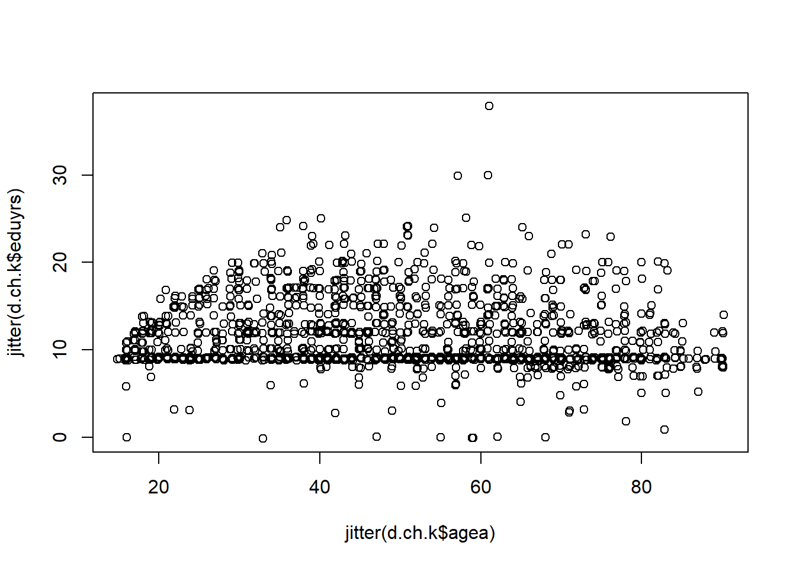
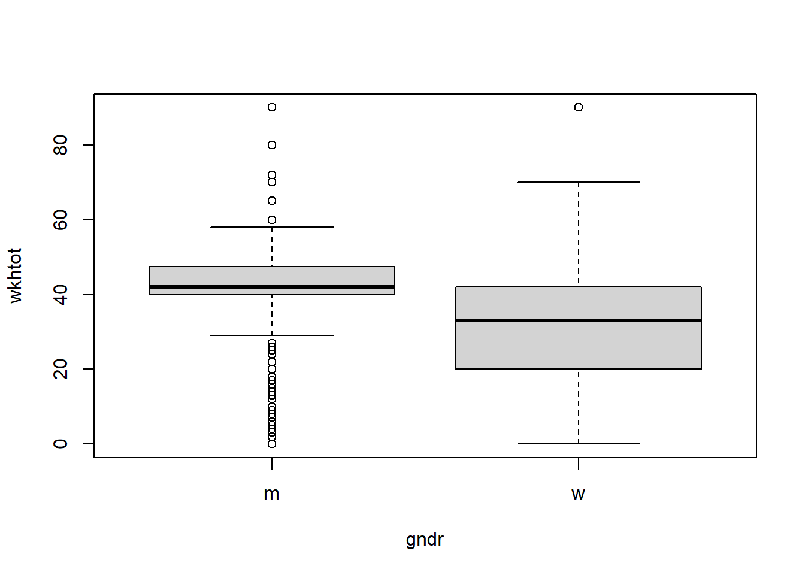
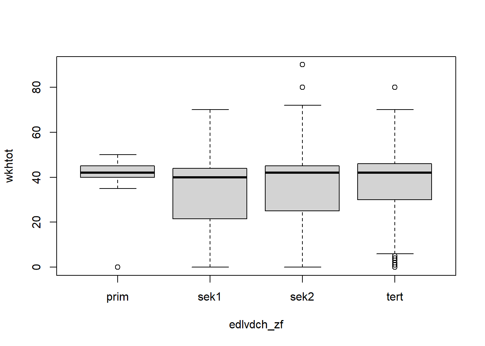

source(file = "C:/Users/BisangL/Documents/c_fuer_quarto/skripts/datenaufbereitung_ess11.R")Woche 10
Einführung Lineare Regression
Lernziele
Nachdem wir unsere Daten aufbereitet und ersten Analysen mittels Kreuztabellen und Plots gemacht haben, gehen wir in der kommenden Woche zur Regressionsanalyse über. Wir beginnen mit einfachen Regressionsmodellen und machen uns Schritt für Schritt mit der Definition und Interpretation dieser Modelle in R vertraut.
Die Lernziele:
- Sie erklären die Notation von Regressionsmodellen in R.
- Sie erklären, wie in ein lineares Regressionsmodell sowohl metrische als auch kategoriale und binomiale unabhängige Variablen einfliessen können.
- Sie wenden die Funktion
lm()an.
Aufgaben
ImportantRegressionsanalyse
Die bivariate Regressionsanalyse berechnet die gerichtete (asymmetrische) Beziehung zwischen zwei Variablen, in der einfachsten Form einer unabhängigen Variable X auf eine abhängige Variable Y. Mit der linearen Regression sind Vorhersagen, Schätzungen von Parametern und Bestimmung von Einflussgrössen, aber auch Optimierungen und Kalibrierungen möglich. Dabei repräsentiert X die Ursache und Y die Wirkung.
Es können auch kategoriale Variablen als unabhängige Variablen hinzugezogen werden. Bei kategorialen Variablen mit mehreren Ausprägungen wird im Hintergrund ein multiples Modell gerechnet, das für die jeweiligen Ausprägungen eine Referenzkategorie und für den Rest eine Dummy-Variable erstellt. Wir werden anschliessend noch sehen, was dies genau bedeutet.
Quelle: Diaz-Bone, R. (2023). Statistik für die Soziologie (6). Berlin: UVK.
Aufgabe 1
Formulieren Sie zwei inhaltliche Fragestellungen, die Sie anhand des ESS-Datensatzes (gerne dürfen Sie auch nochmals im Codebook die Variablen durchgehen, passende Variablen im R-Skript bereinigen und dann ins Modell aufnehmen!) und mit einem einfachen linearen Regressionsmodell beantworten können. Eine der beiden Fragestellungen soll einen nicht-geordneten Faktor als unabhängige Variable enthalten.
Nutzen Sie je ein Streudiagramm und einen Boxplot, um erste Hinweise zu Ihren Fragestellungen zu erhalten. Fügen Sie im Streudiagramm die Regressionsgerade hinzu.
Schauen Sie sich die Hilfeseite der
lm()-Funktion an und erläutern Sie die Funktion und ihre Argumente in eigenen Worten.Erstellen Sie die beiden Modelle in R. Wie sind die lm-Objekte aufgebaut? Welche Komponenten und Informationen beinhalten sie?
Interpretieren Sie die Ergebnisse der beiden Regressionsanalysen. Reflektieren Sie, ob Interpretation eingeschränkt sein könnte.
Reflexion (bitte betiteln Sie diesen Abschnitt auch mit “Reflexion” in Ihrem Markdown-Dokument!)
Bitte reflektieren Sie und halten stichpunktartig fest:
- Was ist Ihnen klar geworden?
- Wo sind Sie noch unsicher? Was hat noch nicht geklappt?
Lösungen
Die Lösung enthält der Vollständigkeit halber auch ein Modell mit einem geordneten Faktor als unabhängige Variable. Bitte lesen Sie die Inhalte dazu als Vorbereitung der Besprechung im Seminar ebenfalls durch.
Aufgabe 1
a) Inhaltliche Fragestellungen
Wie wirkt sich das Alter auf die Bildungsjahre aus? eduyrs ~ agea
Wie wirkt sich das Geschlecht auf die Wochenarbeitsstunden aus? wkhtot ~ gndr
Wie wirkt sich das Bildungsniveau auf die Wochenarbeitsstunden aus? wkhtot ~ edlvdch_zf
Die unabhängige Variablen sind im ersten Modell metrisch (lm.met), im zweiten Modell binominal (lm.bin) und im dritten Modell ordinal skaliert (lm.ord).
b) Streudiagramm und Boxplot
plot(jitter(d.ch.k$agea), jitter(d.ch.k$eduyrs))
Hier scheint es kaum möglich zu sein, einen Zusammenhang zwischen den beiden Variablen zu identifizieren. Die Verteilungen in Abhängigkeit einer nicht-metrischen Variablen können wir mit einem Boxplot visualisieren:
boxplot(wkhtot ~ gndr, data = d.ch.k)
boxplot(wkhtot ~ edlvdch_zf, data = d.ch.k)
Die Unterschiede fallen im ersten Plot deutlich aus, im zweiten Plot sind die Unterschiede unterschiedlich gross (ggf. würde es klarer, wenn wir das Modell mit Geschlecht erweitern)…
c) lm()-Funktion
Die Funktion lm() berechnet lineare Modelle. Sie “übersetzt” die Regressionsgleichung y = b0 + b1x + e in die Formulierung response ~ term. Damit können auch multiple, lineare Regressionen dargestellt werden, response ~ term_1 + term_2, oder um Interaktionsterme ergänzt werden, response ~ term_1 * term_2. Die weiteren Argumente erlauben die Daten zu unterteilen, Gewichtungen einzubauen oder den Umgang mit fehlenden Werten zu bestimmen. Wir spezifizieren die Funktion nicht weiter, sondern begnügen uns mit den Standardeinstellungen.
d) Aufbau, Komponenten und Informationen von lm-Objekten
lm.met <- lm(eduyrs ~ agea, data = d.ch.k)
lm.bin <- lm(wkhtot ~ gndr, data = d.ch.k)
lm.ord <- lm(wkhtot ~ edlvdch_zf, data = d.ch.k)Die Funktion lm() generiert ein Listenobjekt mit 13 Unterobjekten. Die genauen Details, was in diesen lm-Objekt zu finden ist, können wir der Hilfeseite unter Value entnehmen.
Wir beginnen mit dem metrischen Modell:
str(lm.met)List of 13
$ coefficients : Named num [1:2] 12.9948 -0.0226
..- attr(*, "names")= chr [1:2] "(Intercept)" "agea"
$ residuals : Named num [1:1351] -2.501 0.684 4.069 -2.61 2.639 ...
..- attr(*, "names")= chr [1:1351] "6188" "6189" "6190" "6191" ...
$ effects : Named num [1:1351] -435.96 -15.74 4.13 -2.58 2.68 ...
..- attr(*, "names")= chr [1:1351] "(Intercept)" "agea" "" "" ...
$ rank : int 2
$ fitted.values: Named num [1:1351] 11.5 12.3 11.9 12.6 12.4 ...
..- attr(*, "names")= chr [1:1351] "6188" "6189" "6190" "6191" ...
$ assign : int [1:2] 0 1
$ qr :List of 5
..$ qr : num [1:1351, 1:2] -36.756 0.0272 0.0272 0.0272 0.0272 ...
.. ..- attr(*, "dimnames")=List of 2
.. .. ..$ : chr [1:1351] "6188" "6189" "6190" "6191" ...
.. .. ..$ : chr [1:2] "(Intercept)" "agea"
.. ..- attr(*, "assign")= int [1:2] 0 1
..$ qraux: num [1:2] 1.03 1.03
..$ pivot: int [1:2] 1 2
..$ tol : num 0.0000001
..$ rank : int 2
..- attr(*, "class")= chr "qr"
$ df.residual : int 1349
$ na.action : 'omit' Named int [1:33] 39 116 284 401 445 488 491 499 506 508 ...
..- attr(*, "names")= chr [1:33] "6226" "6303" "6471" "6588" ...
$ xlevels : Named list()
$ call : language lm(formula = eduyrs ~ agea, data = d.ch.k)
$ terms :Classes 'terms', 'formula' language eduyrs ~ agea
.. ..- attr(*, "variables")= language list(eduyrs, agea)
.. ..- attr(*, "factors")= int [1:2, 1] 0 1
.. .. ..- attr(*, "dimnames")=List of 2
.. .. .. ..$ : chr [1:2] "eduyrs" "agea"
.. .. .. ..$ : chr "agea"
.. ..- attr(*, "term.labels")= chr "agea"
.. ..- attr(*, "order")= int 1
.. ..- attr(*, "intercept")= int 1
.. ..- attr(*, "response")= int 1
.. ..- attr(*, ".Environment")=<environment: R_GlobalEnv>
.. ..- attr(*, "predvars")= language list(eduyrs, agea)
.. ..- attr(*, "dataClasses")= Named chr [1:2] "numeric" "numeric"
.. .. ..- attr(*, "names")= chr [1:2] "eduyrs" "agea"
$ model :'data.frame': 1351 obs. of 2 variables:
..$ eduyrs: int [1:1351] 9 13 16 10 15 12 11 9 9 8 ...
..$ agea : int [1:1351] 66 30 47 17 28 44 79 34 52 70 ...
..- attr(*, "terms")=Classes 'terms', 'formula' language eduyrs ~ agea
.. .. ..- attr(*, "variables")= language list(eduyrs, agea)
.. .. ..- attr(*, "factors")= int [1:2, 1] 0 1
.. .. .. ..- attr(*, "dimnames")=List of 2
.. .. .. .. ..$ : chr [1:2] "eduyrs" "agea"
.. .. .. .. ..$ : chr "agea"
.. .. ..- attr(*, "term.labels")= chr "agea"
.. .. ..- attr(*, "order")= int 1
.. .. ..- attr(*, "intercept")= int 1
.. .. ..- attr(*, "response")= int 1
.. .. ..- attr(*, ".Environment")=<environment: R_GlobalEnv>
.. .. ..- attr(*, "predvars")= language list(eduyrs, agea)
.. .. ..- attr(*, "dataClasses")= Named chr [1:2] "numeric" "numeric"
.. .. .. ..- attr(*, "names")= chr [1:2] "eduyrs" "agea"
..- attr(*, "na.action")= 'omit' Named int [1:33] 39 116 284 401 445 488 491 499 506 508 ...
.. ..- attr(*, "names")= chr [1:33] "6226" "6303" "6471" "6588" ...
- attr(*, "class")= chr "lm"coefficients: Koeffizientseffekt pro Fall sowie Namen der Koeffizienten (b0/Intercept und x1/Alter)
residuals: Angaben zu allen Residuen
effects: (Wert aus der Berechnungsweise der kleinsten Quadrate)
rank: der numerische Rang des Modells (Anzahl Variablen insgesamt) fitted.values: Vorhersagewerte
assign: (numerischer Wert zur Zuordnung von abhängiger und unabhängiger Variable)
qr: (Spezifierung aus dem Modell der kleinsten Quadrate)
df.residual: Freiheitsgrade der Residuen (= n - Anazhl Variablen)
na.action: Umgangsweise mit fehlenden Werten
xlevels: Ausprägungen bei Faktoren als unabhängige Variablen an
call: Formel
terms: alle Begriffe im Modell
model: Beschreibung der Variablen des Modells
Bei den Modellen mit kategorialen Variablen finden wir zusätzlich noch ein weiteres Unterobjekt (wenn noch fehlende Werte vorhanden wären, dann wäre das Ergebnisobjekt eine Liste mit 14 Unterobjekten): contrasts spezifiziert den Umgang mit den kategorialen Variablen (siehe unten).
str(lm.bin)List of 14
$ coefficients : Named num [1:2] 41.4 -10.8
..- attr(*, "names")= chr [1:2] "(Intercept)" "gndrw"
$ residuals : Named num [1:1271] -28.38 18.62 6.62 -10.53 0.62 ...
..- attr(*, "names")= chr [1:1271] "6188" "6189" "6190" "6192" ...
$ effects : Named num [1:1271] -1288.151 -193.211 6.896 -9.199 0.896 ...
..- attr(*, "names")= chr [1:1271] "(Intercept)" "gndrw" "" "" ...
$ rank : int 2
$ fitted.values: Named num [1:1271] 41.4 41.4 41.4 30.5 41.4 ...
..- attr(*, "names")= chr [1:1271] "6188" "6189" "6190" "6192" ...
$ assign : int [1:2] 0 1
$ qr :List of 5
..$ qr : num [1:1271, 1:2] -35.651 0.028 0.028 0.028 0.028 ...
.. ..- attr(*, "dimnames")=List of 2
.. .. ..$ : chr [1:1271] "6188" "6189" "6190" "6192" ...
.. .. ..$ : chr [1:2] "(Intercept)" "gndrw"
.. ..- attr(*, "assign")= int [1:2] 0 1
.. ..- attr(*, "contrasts")=List of 1
.. .. ..$ gndr: chr "contr.treatment"
..$ qraux: num [1:2] 1.03 1.03
..$ pivot: int [1:2] 1 2
..$ tol : num 0.0000001
..$ rank : int 2
..- attr(*, "class")= chr "qr"
$ df.residual : int 1269
$ na.action : 'omit' Named int [1:113] 4 13 17 25 29 38 49 50 57 66 ...
..- attr(*, "names")= chr [1:113] "6191" "6200" "6204" "6212" ...
$ contrasts :List of 1
..$ gndr: chr "contr.treatment"
$ xlevels :List of 1
..$ gndr: chr [1:2] "m" "w"
$ call : language lm(formula = wkhtot ~ gndr, data = d.ch.k)
$ terms :Classes 'terms', 'formula' language wkhtot ~ gndr
.. ..- attr(*, "variables")= language list(wkhtot, gndr)
.. ..- attr(*, "factors")= int [1:2, 1] 0 1
.. .. ..- attr(*, "dimnames")=List of 2
.. .. .. ..$ : chr [1:2] "wkhtot" "gndr"
.. .. .. ..$ : chr "gndr"
.. ..- attr(*, "term.labels")= chr "gndr"
.. ..- attr(*, "order")= int 1
.. ..- attr(*, "intercept")= int 1
.. ..- attr(*, "response")= int 1
.. ..- attr(*, ".Environment")=<environment: R_GlobalEnv>
.. ..- attr(*, "predvars")= language list(wkhtot, gndr)
.. ..- attr(*, "dataClasses")= Named chr [1:2] "numeric" "factor"
.. .. ..- attr(*, "names")= chr [1:2] "wkhtot" "gndr"
$ model :'data.frame': 1271 obs. of 2 variables:
..$ wkhtot: int [1:1271] 13 60 48 20 42 42 45 10 42 50 ...
..$ gndr : Factor w/ 2 levels "m","w": 1 1 1 2 1 2 2 2 2 1 ...
..- attr(*, "terms")=Classes 'terms', 'formula' language wkhtot ~ gndr
.. .. ..- attr(*, "variables")= language list(wkhtot, gndr)
.. .. ..- attr(*, "factors")= int [1:2, 1] 0 1
.. .. .. ..- attr(*, "dimnames")=List of 2
.. .. .. .. ..$ : chr [1:2] "wkhtot" "gndr"
.. .. .. .. ..$ : chr "gndr"
.. .. ..- attr(*, "term.labels")= chr "gndr"
.. .. ..- attr(*, "order")= int 1
.. .. ..- attr(*, "intercept")= int 1
.. .. ..- attr(*, "response")= int 1
.. .. ..- attr(*, ".Environment")=<environment: R_GlobalEnv>
.. .. ..- attr(*, "predvars")= language list(wkhtot, gndr)
.. .. ..- attr(*, "dataClasses")= Named chr [1:2] "numeric" "factor"
.. .. .. ..- attr(*, "names")= chr [1:2] "wkhtot" "gndr"
..- attr(*, "na.action")= 'omit' Named int [1:113] 4 13 17 25 29 38 49 50 57 66 ...
.. ..- attr(*, "names")= chr [1:113] "6191" "6200" "6204" "6212" ...
- attr(*, "class")= chr "lm"e) Interpretation und Einschränkung
ImportantResiduen-Analyse
In der Praxis beginnt man nicht mit der Interpretation der Modelle, sondern mit der Prüfung der Anwendungsvoraussetzungen (Residuendiagnostik)! Um die Modelle einzuführen und dann den Sinn der Anwendungsvoraussetzungen nachvollziehen zu können, schauen wir uns trotzdem erstmal die Ergebnisse an.
summary(lm.met)
Call:
lm(formula = eduyrs ~ agea, data = d.ch.k)
Residuals:
Min 1Q Median 3Q Max
-12.633 -2.818 -1.456 2.501 26.386
Coefficients:
Estimate Std. Error t value Pr(>|t|)
(Intercept) 12.994792 0.313181 41.49 < 0.0000000000000002 ***
agea -0.022635 0.005849 -3.87 0.000114 ***
---
Signif. codes: 0 '***' 0.001 '**' 0.01 '*' 0.05 '.' 0.1 ' ' 1
Residual standard error: 4.066 on 1349 degrees of freedom
(33 Beobachtungen als fehlend gelöscht)
Multiple R-squared: 0.01098, Adjusted R-squared: 0.01025
F-statistic: 14.98 on 1 and 1349 DF, p-value: 0.0001139Die Funktion summary() fasst das Modell zusammen und gibt Kennzahlen aus. Die Auflistung beginnt mit der Formel (Call), geht über zu einer kurzen Beschreibung der Verteilung der Residuen (Residuals), bevor die Koeffizienten und anschliessend eine Übersicht über das gesamten Modell folgen.
Zuerst werden die Koeffizienten beschrieben (Estimate), d.h. der b0-Wert (Intercept) und der Koeffizient der unabhängigen Variable. Ersterer gibt den Vorhersagewert an, wenn die unabhängige Variable 0 wäre (Schnittpunkt der Regressionsgeraden mit der y-Achse). Letzterer gibt die Zunahme des Vorhersagewertes bei einer Zunahme der unabhängigen Variable um 1 an (Steigung der Regressionsgeraden). Der Koeffizient liegt nahe bei Null, d.h. der Effekt von Alter ist klein.
Die zweite Kennzahl ist der Standardfehler (Std.Error), also die durchschnittliche Abweichung der Koeffizienten. Als Faustregel für diesen Wert gilt: Regressionskoeffizient –/+ (2 * SE) (das entspricht ungefähr dem Konfidenzintervall), sollte 0 nicht überschreiten, sonst ist die Wahrscheinlichkeit gross, dass der Effekt auch Null sein könnte und somit “nicht signifikant” ist (d.h. grösserer p-Wert). Es gilt also den Standardfehler im Zusammenhang mit dem Regressionskoeffizienten zu betrachten.
Die dritte Kennzahl ist der t-Wert (t value). Er repräsentiert die Testwerte des t-Tests. Der Test prüft die Lage einer Stichprobe (\(\mu\)). Die Frage, die der t-Test beantwortet, ist: Hat die x-Variable einen “nicht rein zufälligen” Einfluss, d.h. Einfluss in der Grundgesamtheit auf die y-Variable, d.h. ist das Ereignis so extrem, dass es im Verwerfungsbereich liegt? Die Nullhypothese lautet: Der Koeffizient ist gleich Null, d.h. es ist kein Effekt nachweisbar. Sie ist in der Regel besonders einfach formuliert und soll widerlegt werden. Die Alternativhypothese ist (hier) zweiseitig und lautet: Der Koeffizient ist nicht gleich Null, d.h. ein Effekt ist plausibel. Es gilt die Faustregel: t-Werte, die grösser als 2 sind, sind meistens auf dem 5%- Niveau (bei nicht allzu wenigen Freiheitsgraden) signifikant. In der Praxis schauen wir meist nur die daraus abgeleiteten p-Werten an. Dennoch geben die t-Werte ebenfalls einen Eindruck der „Stärke der Signifikanz“.
ImportantVorgehen – Statistische Tests
Problem: Fragestellung möglichst präzise formulieren und Art der Daten bestimmen, die zur Beantwortung herangezogen werden
Hypothesen:
Nullhypothese legt die Verteilung der Daten fest und ist meist besonders einfach formuliert. Sie soll widerlegt werden.
Alternativhypothese legt die Richtung des Test fest.
Die beiden Hypothesen sollen alle möglichen Ausprägungen des Stichprobenkennwerts abdecken, wodurch eine klare Testentscheidung möglich ist.
Teststatistik (Was soll getestet werden? Formel! Verteilung hängt von Stichprobenumfang ab: Bei grossen n genügt die Standard-Normalverteilung)
Stichprobenverteilung unter vorläufiger Annahme der Nullhypothese (ist für viele gebräuchliche Tests theoretisch bestimmt).
Verwerfungsbereich: Je nach Teststatistik, Richtung der Alternativen und \(\alpha\).
Testentscheid: Erst jetzt darf der zu prüfende (empirische!) Stichprobenkennwert herangezogen werden!
Fällt der Wert in den Verwerfungsbereich, ist die Nullhypothese zu verwerfen, andernfalls ist sie beizubehalten (wobei sie richtig oder falsch sein kann!)
Statt des Verwerfungsbereichs kann man sich direkt auf den p-Wert beziehen.
Der p-Wert (Pr(>|t|)) ist der Signifikanzwert für einzelne Regressionskoeffizienten. Grundsätzlich kann er als Mass für die Verträglichkeit der Daten und Nullhypothese oder “Plausibilität der Nullhypothese im Lichte der Daten” gelesen werden ((Stahel 2008, p. 208)). Es handelt sich um eine Zufallsvariable, weil er aus der Teststatistik T berechnet wird ((Stahel 2008, p. 209)). Die einzig zulässige Aussage mit Wahrscheinlichkeit wäre: Würde man nochmals Daten erheben und gilt die Nullhypothese, wäre die Wahrscheinlichkeit den gleichen oder einen noch extremeren p-Wert zu erhalten, der p-Wert (“Überschreitungs-Wahrscheinlichkeit”; (Stahel 2008, p. 210)). Wir interessieren uns dabei für die Frage, ob die einzelnen unabhängigen Variablen einen Effekt auf die abhängige Variable haben. Die Nullhypothese entspricht der oben formulierten Hypothese (aber Achtung: der p-Wert gehört zum Test, nicht zur Hypothese an sich). Zusätzlich findet sich jeweils noch der Hinweis zu den Sternchen als Signifikanzcodes. Der Koeffizient ist signifikant. (Die Signifikanz des Intercepts interessiert nicht, denn dieser bleibt sowieso im Modell!) Wir haben aber vorher auch festgestellt, dass der Effekt sehr klein ist. Solche Effekte spielen in der Realität keine Rolle, trotz “Signifikanz”!
Anschliessend folgen weitere Kennwerte zum gesamten Modell: Die Standardabweichung der Residuen wird ausgegeben (Residual standard error) sowie die Freiheitsgrade (degrees of freedom), das heisst N - J - 1, wobei N die Fallzahl und J die Anzahl unabhängiger Variablen ist.
Danach folgen das multiple R-Quadrart (Multiple R-squared) sowie dessen Anpassung (Adjusted R-squared). Ersteres ist das Bestimmtheitsmass und gibt uns die Erklärungsleistung des Modells an. Ist der Wert nahe 1, erklärt das Modell einen grossen Anteil der totalen Varianz und ist somit gut (d.h., die Punkte liegen nahe oder auf der Regressionsgerade). Der Wert dieses Modells liegt weit davon entfernt. Wie bereits angedeutet, sollten wir womöglich weitere Variablen aufnehmen.
Schliesslich finden sich noch die Angaben zum F-Test (F-statistic). Beim (globalen) F-Test interessieren wir uns für die Frage, ob es mindestens eine x-Variable im Modell gibt, die einen relevanten Effekt auf die y-Variable hat. Wir vergleichen das kleinere Modell (nur Achsenabschnitt) mit einem grösseren Modell (hier eine x-Variable). Die Nullhypothese lautet: Alle βj (ausser β0) sind Null. R gibt sowohl den konkreten F-Test-Wert (und die Anzahl Freiheitsgrade der Verteilung) als auch den p-Wert aus.
Wir schauen uns noch die anderen Modelle an:
summary(lm.bin)
Call:
lm(formula = wkhtot ~ gndr, data = d.ch.k)
Residuals:
Min 1Q Median 3Q Max
-41.380 -6.535 1.465 9.465 59.465
Coefficients:
Estimate Std. Error t value Pr(>|t|)
(Intercept) 41.3796 0.5789 71.48 <0.0000000000000002 ***
gndrw -10.8446 0.8322 -13.03 <0.0000000000000002 ***
---
Signif. codes: 0 '***' 0.001 '**' 0.01 '*' 0.05 '.' 0.1 ' ' 1
Residual standard error: 14.83 on 1269 degrees of freedom
(113 Beobachtungen als fehlend gelöscht)
Multiple R-squared: 0.118, Adjusted R-squared: 0.1173
F-statistic: 169.8 on 1 and 1269 DF, p-value: < 0.00000000000000022Wiederum scheint das Modell keine grosse Erklärungsleistung zu besitzen (und diese kann auch nicht auf eine Grundgesamtheit übertragen werden). Der Koeffizient ist wieder signifikant und dieses Mal deutlich grösser. Für die Variable “gndr” steht nicht nur der Variablenname, sondern auch ein Level (“gndrw”). Dies sagt aus, dass wir diesen Effekt auf die Wochenarbeitsstunden erwarten, wenn wir beim Geschlecht von “männlich” (Referenzlevel) zu “weiblich” wechseln. Deshalb kann man auch vom Unterschied zum Referenzlevel sprechen. Der Intercept entspricht dem Schätzer des Referenzlevels.
Standardmässig nimmt R das erst genannte Level als Referenzlevel. Wenn der Faktor manuell definiert ist, wird diese “Erstnennung” berücksichtigt, sonst gilt die alphabetische Reihenfolge (siehe Aufbereitungsskript oder ‘str()’ –> “m”). Wir können das Referenzlevel abhängig von der Fragestellung ändern:
str(d.ch.k$gndr) Factor w/ 2 levels "m","w": 1 1 1 2 2 1 2 2 2 2 ...d.ch.k$gndr <- relevel(d.ch.k$gndr, ref = "w")
str(d.ch.k$gndr) Factor w/ 2 levels "w","m": 2 2 2 1 1 2 1 1 1 1 ...lm.bin.rel <- lm(wkhtot ~ gndr, data = d.ch.k)
summary(lm.bin.rel)
Call:
lm(formula = wkhtot ~ gndr, data = d.ch.k)
Residuals:
Min 1Q Median 3Q Max
-41.380 -6.535 1.465 9.465 59.465
Coefficients:
Estimate Std. Error t value Pr(>|t|)
(Intercept) 30.5350 0.5979 51.08 <0.0000000000000002 ***
gndrm 10.8446 0.8322 13.03 <0.0000000000000002 ***
---
Signif. codes: 0 '***' 0.001 '**' 0.01 '*' 0.05 '.' 0.1 ' ' 1
Residual standard error: 14.83 on 1269 degrees of freedom
(113 Beobachtungen als fehlend gelöscht)
Multiple R-squared: 0.118, Adjusted R-squared: 0.1173
F-statistic: 169.8 on 1 and 1269 DF, p-value: < 0.00000000000000022Bei einer dummy-Variable ändert sich das Vorzeichen und der Intercept.
Nun zum Modell mit geordnetem Faktor als Input-Variable:
summary(lm.ord)
Call:
lm(formula = wkhtot ~ edlvdch_zf, data = d.ch.k)
Residuals:
Min 1Q Median 3Q Max
-39.462 -9.554 5.150 9.150 54.150
Coefficients:
Estimate Std. Error t value Pr(>|t|)
(Intercept) 36.4387 1.1815 30.842 <0.0000000000000002 ***
edlvdch_zf.L -0.9484 2.9984 -0.316 0.752
edlvdch_zf.Q 3.7684 2.3629 1.595 0.111
edlvdch_zf.C -2.2469 1.4753 -1.523 0.128
---
Signif. codes: 0 '***' 0.001 '**' 0.01 '*' 0.05 '.' 0.1 ' ' 1
Residual standard error: 15.76 on 1263 degrees of freedom
(117 Beobachtungen als fehlend gelöscht)
Multiple R-squared: 0.004987, Adjusted R-squared: 0.002623
F-statistic: 2.11 on 3 and 1263 DF, p-value: 0.09719Beim dritten, kategorialen (ordinalen) Modell sehen wir, dass die einzelnen Ausprägungen der unabhängigen Variable eigene dummy-Koeffizienten und zugehörige Kennwerte erhalten. R kann kategoriale Variablen auf unterschiedliche Arten in Modelle aufnehmen, weil wir zum Beispiel drei Kategorien auf verschiedene Art und Weise in zwei Kategorien ausdrücken können. Häufig wird contr.treatment verwendet, wobei der ersten Ausprägung der Wert 0 zugewiesen wird und die Koeffizienten dann die Veränderung gegenüber dieser Ausprägung angeben. Dadurch braucht es zum Beispiel nicht mehr gut, mittel und schlecht, sondern nur zwei dummy-Variablen (R macht das im Hintergrund, wenn wir die Optionen entsprechend spezifizieren). Wenn wir sie aufrufen, sehen wir, dass R standardmässig verschiedene Varianten gewählt hat:
lm.bin$contrasts$gndr
[1] "contr.treatment"lm.ord$contrasts$edlvdch_zf
[1] "contr.poly"Für geordnete Faktoren wählt R contr.poly. Da contr.treatment leichter zu interpretieren ist, ändern wir diese Einstellung. Wir müssen zwei Werte für (1) ungeordnete Faktoren und (2) geordnete Faktoren angeben.
options(contrasts = c("contr.treatment", "contr.treatment"))
lm.ord.2 <- lm(wkhtot ~ edlvdch_zf, data = d.ch.k)
summary(lm.ord.2)
Call:
lm(formula = wkhtot ~ edlvdch_zf, data = d.ch.k)
Residuals:
Min 1Q Median 3Q Max
-39.462 -9.554 5.150 9.150 54.150
Coefficients:
Estimate Std. Error t value Pr(>|t|)
(Intercept) 39.462 4.372 9.027 <0.0000000000000002 ***
edlvdch_zfsek1 -6.202 4.627 -1.340 0.180
edlvdch_zfsek2 -3.612 4.411 -0.819 0.413
edlvdch_zftert -2.277 4.437 -0.513 0.608
---
Signif. codes: 0 '***' 0.001 '**' 0.01 '*' 0.05 '.' 0.1 ' ' 1
Residual standard error: 15.76 on 1263 degrees of freedom
(117 Beobachtungen als fehlend gelöscht)
Multiple R-squared: 0.004987, Adjusted R-squared: 0.002623
F-statistic: 2.11 on 3 and 1263 DF, p-value: 0.09719…auch hier könnten wir wieder das Referenzlevel ändern…
Die p-Werte der einzelnen Ausprägungen von edlvdch_zf sind nur schwer interpretierbar. Wollen wir wissen, ob das Modell mit der kategorialen Variable besser ist als das Nullmodell (die kategoriale Variable “insgesamt” einen Effekt hat), müssen wir einen F-Test für die Variable mit ‘drop1()’ durchführen. Diese Funktion prüft, ob das vollständige Modell besser passt als das Modell ohne den Term.
drop1(lm.ord.2, test = "F")Single term deletions
Model:
wkhtot ~ edlvdch_zf
Df Sum of Sq RSS AIC F value Pr(>F)
<none> 313796 6991.8
edlvdch_zf 3 1572.7 315369 6992.2 2.1099 0.09719 .
---
Signif. codes: 0 '***' 0.001 '**' 0.01 '*' 0.05 '.' 0.1 ' ' 1Das Modell mit edlvdch_zf ist nicht besser als das Nullmodell…